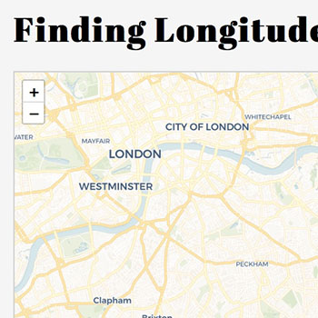

Bootstrap starter template
Mapping and research portfolio for John F. Obrycki
| Environmental Scientist | NewMapsPlus student |
Mapping
Unemployment Rates 2001-2015
----------
Time series map of US unemployment rates by county, 2001-2015.
Visit the map
Global Health
Bangladesh Health Facilities Map
----------
Interactive map displaying health facility data at the district level in Bangladesh.
Visit the map
Global Health
Neural Tube Defect Surveillance
----------
Static maps showing locations of surveillance programs.
Visit the map
Mapping
Interactive Power Source Map
----------
Review different power source data across the United States.
Visit the map
Mapping
Learning About Longitude
----------
A look at the fascinating history of longitude.
Visit the map

Agricultural History
Crop Rotations in Iowa
----------
Historical look at crop rotations in Iowa during the 1930s.
Read the paper in JSWC
Soil Science
Crop Rotations and Soil Carbon
----------
Measuring soil properties following long-term manure management.
Read the paper in Agronomy